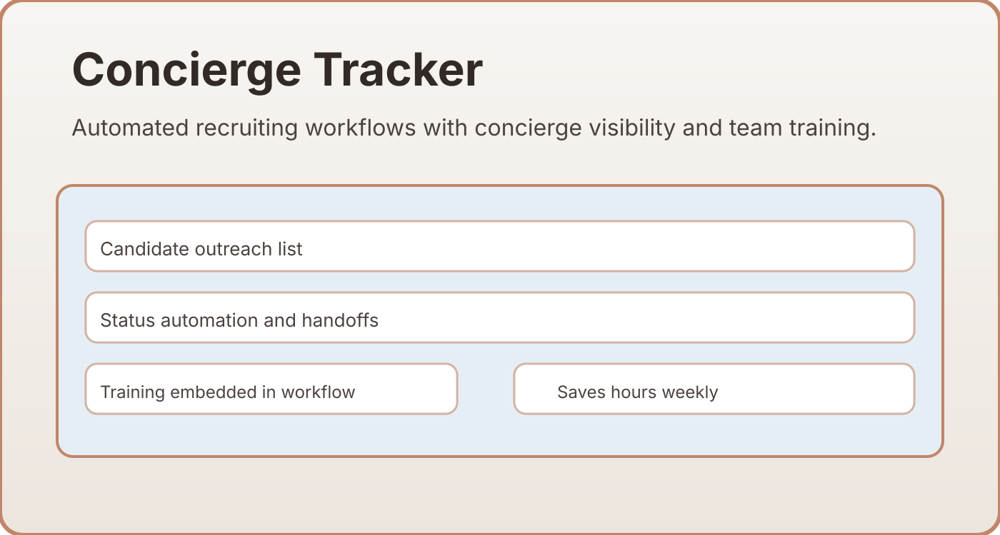

Profile
Hi, I'm Jake Biddlecome.
I design AI-powered internal tools, build data pipelines on SQL databases, and lead cross-department programs that measurably cut costs and labor.

Recent Work
AI-Powered Tools Platform
Built a 55+ tool internal platform on Python/FastAPI serving 6 departments — deployed on Render with live MySQL via SSH-tunneled RDS.
Designed AI-powered resume screening using GPT-4.1-mini with structured JSON output for hospitality position matching across 17 job types.
Automated MSP compliance monitoring with background schedulers that poll a production SQL database every 15 minutes and dispatch alerts via Microsoft Graph API.
Built a real-time Shift Risk Dashboard with a weighted risk-scoring algorithm querying live event, shift, and employee data.
Skills
Leadership & Technical
Management & Operations
Technical Tools
Domain Knowledge
- Sales & Marketing Ops
- HR & Onboarding
- Payroll Compliance
- State & Federal Regulations
- Staffing & Recruiting
- Business Development
- IT Systems Administration
- Vendor Evaluation & Selection
- Cost Cutting Strategies
- SOP Development
- Training & Adoption Programs
- Internal Tool Development
Projects
Tools I've Built
Real-time fill-rate tracking, avg time-to-fill metrics, and per-client notes powered by live SQL queries across 6 joined tables.
Financial P&L tool calculating billing, gross pay, MSP fees, WC fees, and payroll tax per client with drill-down breakdowns.
GPT-powered tool accepting PDF, DOCX, or images; returns structured JSON scoring across 17 hospitality positions with confidence ratings.
A 2,292-line SQL-to-Excel report engine covering timesheet verification, summary reports, scheduled vs. worked hours, and cancellation analysis.
Real-time risk scoring for understaffed events using a weighted algorithm — color-coded CRITICAL / WARNING / AT RISK.
Monitors managed service provider confirmations with background polling and email notifications via Microsoft Graph.
Automated diffing engine that snapshots client database records and emails stakeholders when fields change.
Schedule-aware email routing using Microsoft Graph API with deduplication tracking and business-hours enforcement.
Interface for bulk production database updates with undo capability for attestation questions, net terms, and staffing manager reassignments.
AI-assisted message drafting and employee list filtering by position, status, and county for targeted outreach.
Portfolio
Screenshots

A mapping tool designed to manage thousands of open shifts by location. This assists our staffing team in optimizing travel logistics, ensuring shift coverage across broad regions, and visualizing employee density relative to client needs.
An advanced financial tool that provides deep insights into profit and loss. It automates complex calculations across clients and departments, allowing for immediate identification of cost-saving opportunities and margin optimization.

Leveraging historical sales data and trend analysis to drive growth. This tool helps the business development team identify high-value targets and monitor sales health across the entire client portfolio.

Built a concierge tracking web app from scratch to automate recruiting, reduce manual follow-ups, and train the recruiting team. The system saved hours each week and made the outreach process consistent across the team.

Developed a metrics app that gave the entire company real-time visibility into sales and staffing performance. Weekly leaders and client trends were surfaced automatically so teams could react faster and focus on the right accounts.
Experience
Career Snapshot
-
Culinary Staffing Services
Senior Technical Programs Manager
May 2019 – Present
-
Bradco Kitchen + Design
Showroom & Project Manager
Aug 2016 – May 2019
-
Auster Rubber Company
Inside Sales & Project Manager
Jun 2016 – Jul 2017
-
Crossroads Trading Company
Store Manager
Dec 2011 – May 2016
-
AmeriCorp NCCC
Wildland Firefighter FFT2
Nov 2010 – Nov 2011
Talk
Talk to Jake's AI
Ask about my experience, tech stack, or how I build automations.
Contact